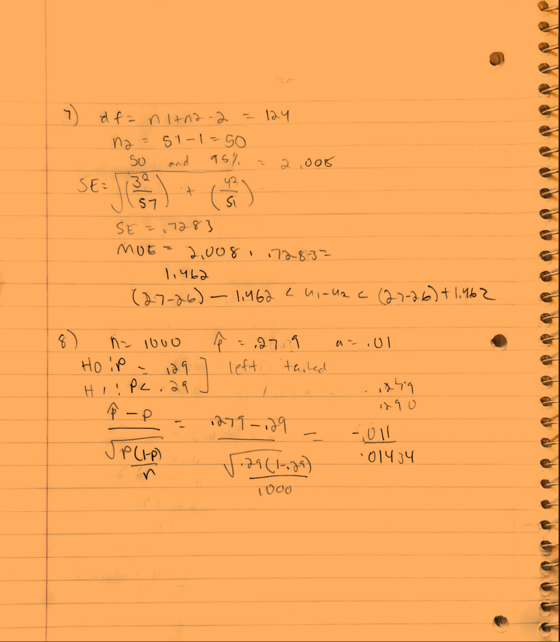

I always try to calm myself and prepare myself mentally before every test. I always feel a little anxious before every test and but I like to go over a few topics before so I can keep it fresh in my mind. I make sure that I have reviewed all of the relevant course material. I also take the time to organize my notes and review any key concepts or formulas that I may need to use on the quiz or exam.
During a quiz or exam, I try to the easier questions first and then circle back on the more difficult ones so I can focus on them. I find keeping an eye on time really helps my time managememnt and ensures that I am not going to go over time. I try to write my ideas so I am able to pull from concepts I may not fully remember.
After receiving my quiz or exam grade, I take the time to review and reflect on my work and the feedback that I have been given. I carefully go over my answers and any comments or suggestions from my teacher, and think about what I did well and where I could improve. I also try to identify any common mistakes or areas of weakness that I need to work on. Based on this review, I create a plan for revising and improving my work in the future. This may involve reviewing the relevant course material, seeking help from my teacher or classmates, or practicing similar problems to strengthen my skills. Overall, this process of reviewing and revising my work is an important part of my learning and helps me to continue improving as a student.